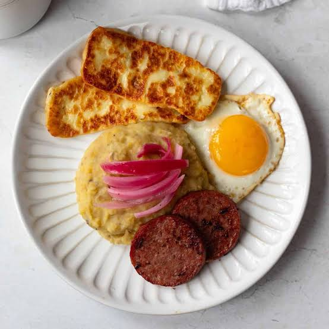
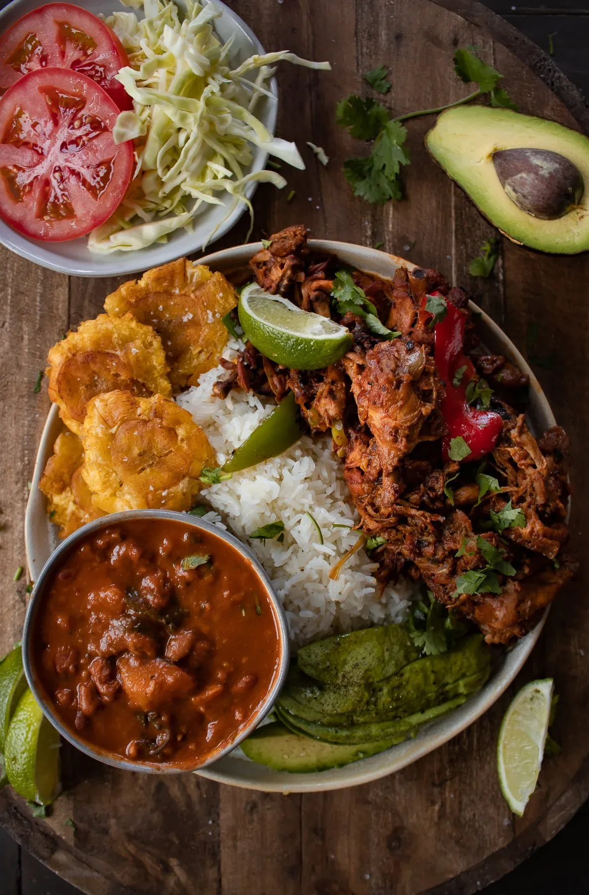
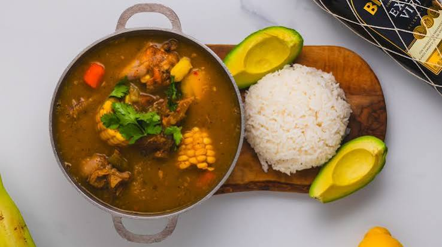

Mangu
Mangu is a traditional Dominican dish made from mashed plantains, often served with eggs, Domincan salami and cheese.
Explore the delicious and diverse cuisine of the Dominican Republic.
The Dominican Republic is known for its flavorful and diverse cuisine, influenced by indigenous, African, and European traditions.

Mangu is a traditional Dominican dish made from mashed plantains, often served with eggs, Domincan salami and cheese.

La Bandera is a traditional Dominican dish consisting of rice, beans, and meat, often served with a side of salad.

Sancocho is a hearty stew made with various meats, root vegetables, and herbs, reflecting the country's culinary diversity.